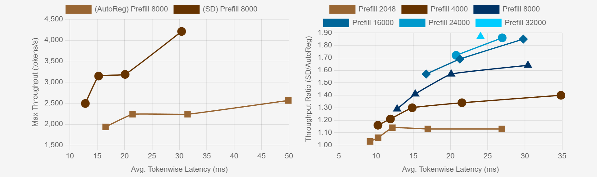
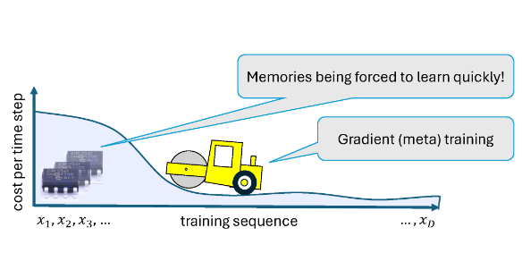

|
I am a Ph.D. student at InfiniAI Lab with Prof. Beidi Chen at Carnegie Mellon University. I am broadly interested in developing algorithms and system optimizations for efficient Machine Learning. Currently, I am working on test-time scaling laws for Large Language Models and how it can be leveraged to achieve higher training throughput for Reinforcement Learning. Additionally, I am keen on developing memory-augmented transformer models with scalable knowledge bank decoupled from a lightweight reasoning backbone model. I am currently working as a research intern at Meta with Dr. Yuandong Tian, Dr. Zechun Liu and Rick Cao on novel transformer architectures with scalable and interpretable knowledge capacity. Previously, I have worked as a research fellow at Microsoft Research India. I am fortunate to be advised by Dr. Harsha Vardhan Simhadri and Dr. Manik Varma. At MSR, I have worked on devising efficient and robust solutions for large-scale retrieval and recommendation system using memory-efficient and low-latency approximate nearest neighbor search methods (DiskANN). Additionally, I collaborated with the Extreme Classification team. I graduated from the Indian Institute of Technology Kharagpur with a dual degree (5 yr B. Tech. + M. Tech.) in Electrical Engineering and a minor in Computer Science Engineering. At IIT Kharagpur, I had the privilege of working with Dr. Jayanta Mukhopadhyay on my thesis projects focused on interpretable and robust model optimization for image classification. |
| |

|
abstract /
bibtex /
paper
/ blog
We rethink test-time scaling laws from a practical efficiency perspective, revealing that the effectiveness of smaller models is significantly overestimated. Prior work, grounded in compute-optimality, overlooks critical memory access bottlenecks introduced by inference-time strategies (e.g., Best-of-$N$, long CoTs). Our holistic analysis, spanning models from 0.6B to 32B parameters, reveals a new Kinetics Scaling Law that better guides resource allocation by incorporating both computation and memory access costs. Kinetics Scaling Law suggests that test-time compute is more effective when used on models above a threshold than smaller ones. A key reason is that in TTS, attention, rather than parameter count, emerges as the dominant cost factor. Motivated by this, we propose a new scaling paradigm centered on sparse attention, which lowers per-token cost and enables longer generations and more parallel samples within the same resource budget. Empirically, we show that sparse attention models consistently outperform dense counterparts, achieving over 60 points gains in low-cost regimes and over 5 points gains in high-cost regimes for problem-solving accuracy on AIME, encompassing evaluations on state-of-the-art MoEs. These results suggest that sparse attention is essential and increasingly important with more computing invested, for realizing the full potential of test-time scaling where, unlike training, accuracy has yet to saturate as a function of computation, and continues to improve through increased generation.
@misc{sadhukhan2025kineticsrethinkingtesttimescaling,
title={Kinetics: Rethinking Test-Time Scaling Laws},
author={Ranajoy Sadhukhan and Zhuoming Chen and Haizhong Zheng and Yang Zhou and Emma Strubell and Beidi Chen},
year={2025},
eprint={2506.05333},
archivePrefix={arXiv},
primaryClass={cs.LG},
url={https://arxiv.org/abs/2506.05333},
}
|

|
abstract /
bibtex /
paper
/ blog
Large language models (LLMs) with long context windows have gained significant attention. However, the KV cache, stored to avoid re-computation, becomes a bottleneck. Various dynamic sparse or TopK-based attention approximation methods have been proposed to leverage the common insight that attention is sparse. In this paper, we first show that TopK attention itself suffers from quality degradation in certain downstream tasks because attention is not always as sparse as expected. Rather than selecting the keys and values with the highest attention scores, sampling with theoretical guarantees can provide a better estimation for attention output. To make the sampling-based approximation practical in LLM generation, we propose MagicPIG, a heterogeneous system based on Locality Sensitive Hashing (LSH). MagicPIG significantly reduces the workload of attention computation while preserving high accuracy for diverse tasks. MagicPIG stores the LSH hash tables and runs the attention computation on the CPU, which allows it to serve longer contexts and larger batch sizes with high approximation accuracy. MagicPIG can improve decoding throughput by up to $5\times$ across various GPU hardware and achieve 54ms decoding latency on a single RTX 4090 for Llama-3.1-8B-Instruct model with a context of 96k tokens.
@misc{chen2024magicpiglshsamplingefficientllm,
title={MagicPIG: LSH Sampling for Efficient LLM Generation},
author={Zhuoming Chen and Ranajoy Sadhukhan and Zihao Ye and Yang Zhou and Jianyu Zhang and Niklas Nolte and Yuandong Tian and Matthijs Douze and Leon Bottou and Zhihao Jia and Beidi Chen},
year={2024},
eprint={2410.16179},
archivePrefix={arXiv},
primaryClass={cs.CL},
url={https://arxiv.org/abs/2410.16179},
}
|
|  |
abstract /
bibtex /
paper /
blog
Large Language Models (LLMs) have become more prevalent in long-context applications such as interactive chatbots, document analysis, and agent workflows, but it is challenging to serve long-context requests with low latency and high throughput. Speculative decoding (SD) is a widely used technique to reduce latency without sacrificing performance but the conventional wisdom suggests that its efficacy is limited to small batch sizes. In MagicDec, we show that surprisingly SD can achieve speedup even for a high throughput inference regime for moderate to long sequences. More interestingly, an intelligent drafting strategy can achieve better speedup with increasing batch size based on our rigorous analysis. MagicDec first identifies the bottleneck shifts with increasing batch size and sequence length, and uses these insights to deploy speculative decoding more effectively for high throughput inference. Then, it leverages draft models with sparse KV cache to address the KV bottleneck that scales with both sequence length and batch size. This finding underscores the broad applicability of speculative decoding in long-context serving, as it can enhance throughput and reduce latency without compromising accuracy. For moderate to long sequences, we demonstrate up to 2x speedup for LLaMA-2-7B-32K and 1.84x speedup for LLaMA-3.1-8B when serving batch sizes ranging from 32 to 256 on 8 NVIDIA A100 GPUs.
@misc{chen2024magicdecbreakinglatencythroughputtradeoff,
title={MagicDec: Breaking the Latency-Throughput Tradeoff for Long Context Generation with Speculative Decoding},
author={Jian Chen and Vashisth Tiwari and Ranajoy Sadhukhan and Zhuoming Chen and Jinyuan Shi and Ian En-Hsu Yen and Beidi Chen},
year={2024},
eprint={2408.11049},
archivePrefix={arXiv},
primaryClass={cs.CL},
url={https://arxiv.org/abs/2408.11049},
}
|
|  |
abstract /
bibtex /
paper
Memory Mosaics are networks of associative memories working in concert to achieve a prediction task of interest. Like transformers, memory mosaics possess compositional capabilities and in-context learning capabilities. Unlike transformers, memory mosaics achieve these capabilities in comparatively transparent ways. We demonstrate these capabilities on toy examples and we also show that memory mosaics perform as well or better than transformers on medium-scale language modeling tasks.
@misc{zhang2024memorymosaics,
title={Memory Mosaics},
author={Jianyu Zhang and Niklas Nolte and Ranajoy Sadhukhan and Beidi Chen and Léon Bottou},
year={2024},
eprint={2405.06394},
archivePrefix={arXiv},
primaryClass={cs.LG},
url={https://arxiv.org/abs/2405.06394},
}
|

|
abstract /
bibtex /
paper
Standard pre-trained convolutional neural networks are deployed on different task-specific limited class applications. These applications require classifying images of a much smaller subset of classes than that of the original large domain dataset on which the network is pre-trained. Therefore, a computationally inefficient and over-represented network is obtained. Hierarchically Self Decomposing CNN (HSD-CNN) addresses this issue by dissecting the network into sub-networks in an automated hierarchical fashion such that each sub-network is useful for classifying images of closely related classes. However, visual similarities are not always well-aligned with the semantic understanding of humans. In this paper, we propose a method that aids the pre-trained network to learn the hierarchy of classes derived from standard taxonomy, WordNet and, produce sub-networks corresponding to semantically meaningful classes upon decomposition. Experimental results show that the cluster of classes obtained for each sub-network is semantically closer according to WordNet hierarchy without degradation in overall accuracy.
@INPROCEEDINGS{9898007,
author={Sadhukhan, Ranajoy and Chatterjee, Ankita and Mukhopadhyay, Jayanta and Patra, Amit},
booktitle={2022 IEEE International Conference on Image Processing (ICIP)},
title={Taxonomy Driven Learning Of Semantic Hierarchy Of Classes},
year={2022},
volume={},
number={},
pages={171-175},
doi={10.1109/ICIP46576.2022.9898007}}
|

|
abstract /
bibtex /
paper
The recent works in Tensor decomposition of Convolutional Neural Networks have paid little attention to fine-tuning the decomposed models more effectively. We propose to improve the accuracy as well as the adversarial robustness of decomposed networks over existing non-iterative methods by distilling knowledge from the computationally intensive undecomposed(Teacher) model to the decomposed(Student) model. Through a series of experiments, we demonstrate the effectiveness of Knowledge Distillation with different loss functions and compare it to the existing fine-tuning strategy of minimizing Cross-Entropy loss with ground truth labels. Finally, we conclude that the Student networks obtained by the proposed approach are superior not only in terms of accuracy but also adversarial robustness, which is often compromised in the existing methods.
@INPROCEEDINGS{9190672,
author={Sadhukhan, Ranajoy and Saha, Avinab and Mukhopadhyay, Jayanta and Patra, Amit},
booktitle={2020 IEEE International Conference on Image Processing (ICIP)},
title={Knowledge Distillation Inspired Fine-Tuning Of Tucker Decomposed CNNS and Adversarial Robustness Analysis},
year={2020},
volume={},
number={},
pages={1876-1880},
doi={10.1109/ICIP40778.2020.9190672}}
|